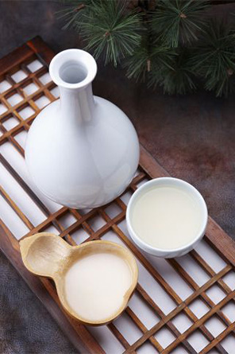

인사말
우리의 누룩(麴)으로 좋은 술(醇)을 빚는 집(堂)
인사말
국순당 홈페이지를 방문해주셔서 감사합니다.
麴醇堂
-
국순당은 지난 1952년 창립이래 우리 전통주의 근본인 누룩의 고유한 제조법을 계승, 발전시키는데 주력하여 현대인의 입맛에 맞게 끊임없이 개선해왔습니다.
대중주로서의 자리 매김을 기반으로 차별화된 제품전략과 지속적인 품질향상 및 관리의 과학화를 통해 우리술의 국제적인 표준을 만들어 나아가고 있습니다.
시대의 흐름을 읽고 고객의 요구와 시장 변화에 한발 앞서서 제품의 효익과 서비스 가치를 극대화하고자 부단한 노력을 하고 있습니다.
전통을 바탕으로 한 혁신에 원칙 준수와 신뢰를 더하여, 좋은 술, 건전한 음주 문화 선도를 통한 삶의 여유가치를 확장해 나가겠습니다.
일제강점기 등을 거치면서 잊혀진 우리술을 매월 한 품목씩 복원하는 '우리술 복원 사업'을 통해 우리술과 우리술 문화를 복원하는데 앞장서겠습니다.
앞으로도 국순당은 각국을 대표하는 명주들과 어깨를 나란히 하는 경쟁력 있는 제품으로써, 또한 우리나라를 대표하는 문화상품인 전통주를 세계에 알리는 기업으로서 위상을 더욱 높이기 위해 최선을 다하겠습니다.